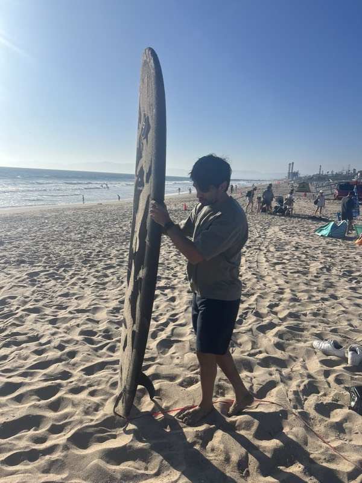
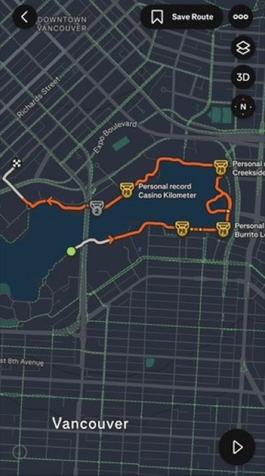

Abhi Sachdev
Software Engineer · Building systems that scale
Experience
Software Engineer
MongoDBAI code generation.
Software Development Engineer II
July 2024 — Nov 2025Software Development Engineer I
March 2023 — July 2024Built the Storage Service powering S3 Express.
Software Development Engineer Intern
Amazon Web ServicesProfiling Rust services.
Software Developer Intern
GoogleVisualizing Google Maps geometry.
Software Development Engineer Intern
Amazon Web ServicesDetecting shard corruptions.
Tech Stack
Languages
Rust
C/C++
Python
Java
JavaScript
SQL
Technologies
AWS
Tokio
Axum
Docker
OpenGL
Off The Clock

I surf sometimes

I try to run
Currently on repeat
Eric Prydz